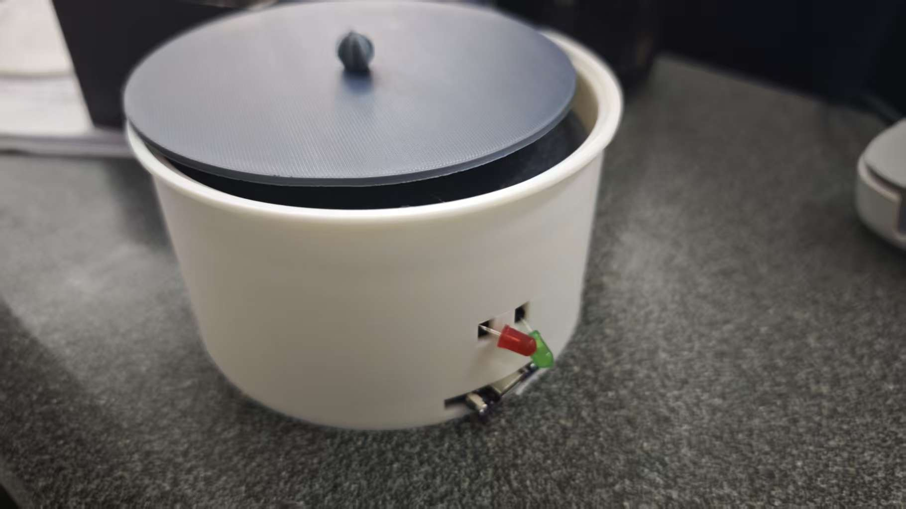
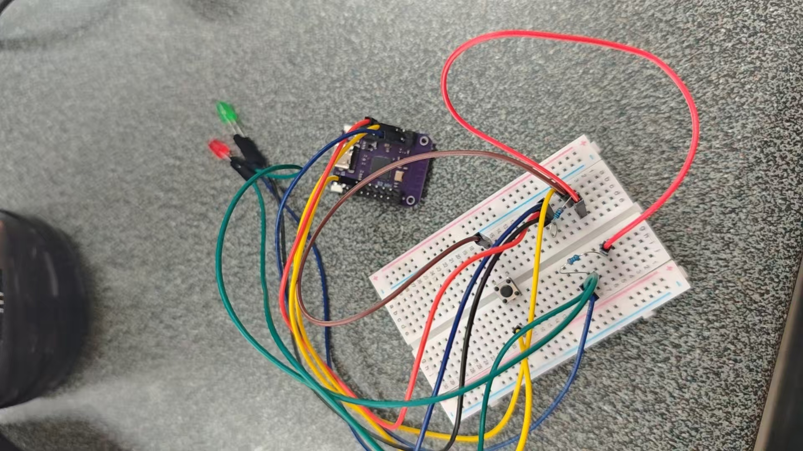

🥤 干杯！专注饮水提醒杯垫
基于Arduino的智能健康提醒设备
📌 Project Profile
项目名称：🥤 干杯！专注饮水提醒杯垫
团队成员：叶锦轩 2025112340、朱梓轩 2025112332、黄上校 2025112326、徐志康 2025112328
个人贡献：3D建模设计、硬件调试与代码实现
一句话定义：一个可以定时提醒用户喝水的智能装置，帮助养成规律饮水习惯
📷 现阶段产品展示
以下是项目现阶段的产品原型、电路搭建与3D打印外壳实拍：

3D打印外壳模型（适配杯垫尺寸）

ESP32主控电路搭建

电路与外壳组装完成效果
🕒 Design Log（时间轴）
周二晚上
确定项目方向，设计基本功能：定时提醒饮水、按钮重置计时。选择ESP32作为核心控制器，初步规划电路结构。初次测试蜂鸣器时接线错误，导致主板烧坏，暂停进度排查问题。
周三晚上
更换新的ESP32开发板，放弃蜂鸣器方案，改用红绿LED灯作为状态提醒：绿灯代表计时中，红灯代表饮水提醒。完成电路接线与代码调试，实现稳定的定时提醒与按钮重置功能。
周四晚上
基于开源杯垫模型进行3D建模修改，调整尺寸以适配电路模块，导出打印文件并提交打印。
周六上午
3D打印外壳完成，进行电路与外壳的组装测试，调整模块位置，确保杯垫结构稳定、电路无短路风险。
⚙️ Tech Stack & Code
硬件清单：
- ESP32 S2 Mini 开发板
- 红绿LED灯各1个
- 220Ω电阻2个
- 轻触按钮1个
- 面包板 & 杜邦线若干
- 3D打印杯垫外壳
核心代码：
const int redLED = 2;
const int greenLED = 9;
const int button = 5;
unsigned long pressTime = 0;
void setup() {
pinMode(redLED, OUTPUT);
pinMode(greenLED, OUTPUT);
pinMode(button, INPUT_PULLUP);
// 开机绿灯亮，表示正常工作
digitalWrite(redLED, LOW);
digitalWrite(greenLED, HIGH);
}
void loop() {
// 按钮按下（低电平触发）
if (digitalRead(button) == LOW) {
if (pressTime == 0) {
pressTime = millis();
}
// 长按3秒触发饮水提醒，红灯亮
if (millis() - pressTime >= 3000) {
digitalWrite(redLED, HIGH);
digitalWrite(greenLED, LOW);
}
}
// 按钮松开，重置状态，绿灯恢复
else {
pressTime = 0;
digitalWrite(redLED, LOW);
digitalWrite(greenLED, HIGH);
}
}
🧠 Reflections
遇到问题：蜂鸣器模块接线错误，导致3块ESP32开发板烧坏，项目进度一度停滞。
原因分析：未加限流电阻，且蜂鸣器正负极接反，导致电路短路；同时代码逻辑不完善，没有处理异常状态。
解决方法：放弃蜂鸣器方案，改用红绿LED灯作为提醒装置，电路结构更简单、风险更低；为LED灯添加限流电阻，避免再次烧坏元件。
经验总结：硬件项目必须遵循「分步调试」原则，先单独测试每个模块，再整体组装；涉及电源和大电流元件时，必须做好限流、防反接保护，避免不可逆的硬件损坏。